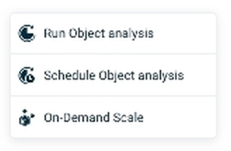

Trigger an Object Analysis by pressing the Run Objects Analysis button on the Ops Manager Analysisscreen, and choosing which partition to analyze.

A dialog box will display, asking for a confirmation of the analysis request:
Because the Object analysis process may consume considerable system resources, it is recommended to run the analysis at an off-peak time, when the system is experiencing relatively low usage.
During the analysis process, the screen appears as follows:
Results of Object Analysis
When the analysis is complete, press Show object analysis report to view the memory usage of the Spaces, Objects, Properties and Indexes. Alternatively, you can choose the action View Latest Report from the command menu.
If the Object analysis is not successful, press Review Logs to view determine the cause of the failure.

Click on an Object Type to view the Object Properties:
Details of Object Analysis
Click on Properties to see the storage usage for the properties of the object .
The Object Types analysis includes entries, RAM size, Disk Utilization, and other data for each object in the space.
Indexes Analysis
Indexes are stored within the Space and used for fast access to data stored either in-memory, and on-disk. This means that indexes compete with object type data for partition memory resources.
This is why it is important to analyze index sizes and take them in consideration as part of system monitoring and future planning.
Index sizes are calculated as part of object analysis run and the calculated sizes can be seen within the object types reports. Each object type contains its indexes and their calculated sizes, including the ability to compare with the previous object analysis.
<<<< screen shot here of the Indexes data>>>
Graphical Display of Object Analysis
In the Space Details screen, two Data Distribution charts are displayed -- Entries by Partition, and Reads by Partition.
Viewing Previous Reports
Press on the Reports tab to see list of earlier Object Analysis reports:
You can click on a report to review its Object Analysis data.